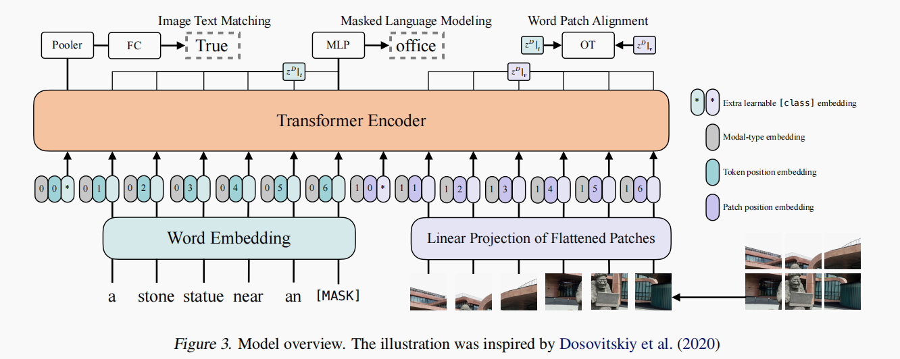
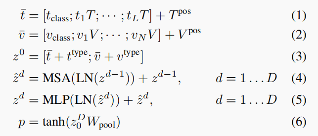
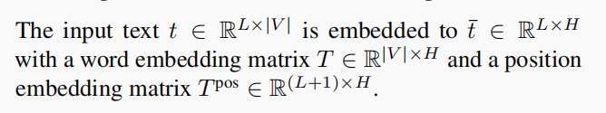
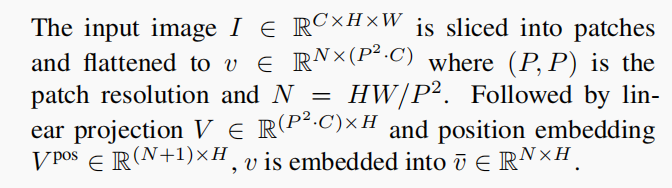
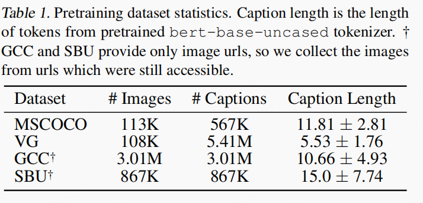
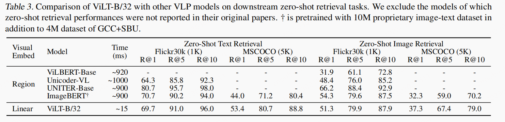
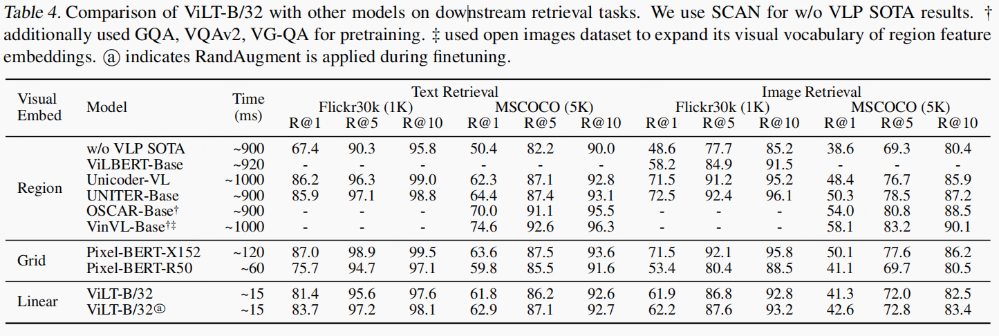

文章idea
- 文章认为
heavy image-encoder无论在训练还是在真实的使用场景都是不好的，因此作者使用了足够light并且fast的方式：直接怼path进行linear projection。
文章贡献
- 提出了非常简单的多模态模型架构
ViLT。
模型细节

Vision-and-Language Pretraining (VLP)在vision和NLP下游任务中表现非常好。目前的VLP方法非常依赖于图像特征提取，其中大部分涉及region supervision。我们提出了一个最小的
VLP模型，Vision-and-Language Transformer (ViLT)。其中，visual inputs的处理也被简化无卷积方式。
Visual Embedding Schema
visual embedding是现有的VLP模型的瓶颈，原因是：现有的VLP模型在text embedder上面是相同的，在visual embedders是不同的。Region Featur:VLP模型中占主导地位，它们来自预训练好的目标检测器，比如：基于Visual Genome (VG)数据库训练的Faster R-CNN。RPN网络会产生数千个RoI，Non-maximum suppression会减少RoI的数据量到1~2K。再经过一些池化操作(比如RoI Align)，RoI heads将ROI提取region features。NMS将feature数量减少到100一下。但是非并行的NMS是一个严重的运行瓶颈。当类别数变大的时候，这个问题会变得更为严重。grid features：直接使用grid features被VQA-specific models提出。Pixel-BERT也是使用grid features的VLP模型。grid features会被直接输入模态交互层。grid features但是
grid features并不是首选，CNN非常重，非常消耗计算资源。Patch Projection: 为了减少开销，我们使用了最简单的embedding方案：对image patch的线性映射。path projection embedding是由ViT引入，首先用于分类任务。Patch Projection将image embedding大大简化为textual embedding。
模型公式表示
ViLT具有非常小的视觉embedding pipeline，并遵循单流方法，因此ViLT可以说是的最简单架构的VLP模型。我们初始化
interaction transformer层使用的是ViT的权重，而且不是BERT，主要是因为我们想利用其处理视觉特征的能力。
VIT的encoder包含了多个堆叠的多头attention(MSA)和一个MLP层。LN层的位置再MSA和MLP之前，这与BERT不同。
文本输入 $t\in R^{L*|V|}$ 通过 word embedding 矩阵 和 position矩阵 映射成
H维度。
图像输入 $ I\in R^{C*H*W}$ 通过 word embedding 矩阵 和 position矩阵 映射成
H维度。

损失函数
ViLT有2个目标函数：masked language modeling (MLM)andimage text matching (ITM)。ITM: 以0.5概率随机替换图像，生成负样本。另外作者还设计了WPA损失用来计算word和patch的对齐分数。MLM: 预测被mask掉的 token。与BERT的MLM损失一样。
模型实验
数据

该模型只评估了 V-L 任务。
下游实验
此处只考虑 retrieval 性能
retrieval
文章分别统计了模型在zero-shot与fintune后的性能表现，由于模型结构的特殊性，所以再检索任务的时候，不能使用cos 相似度的方式。只能使用ITM head的输出。
Zero-shot 性能

finetune 性能
